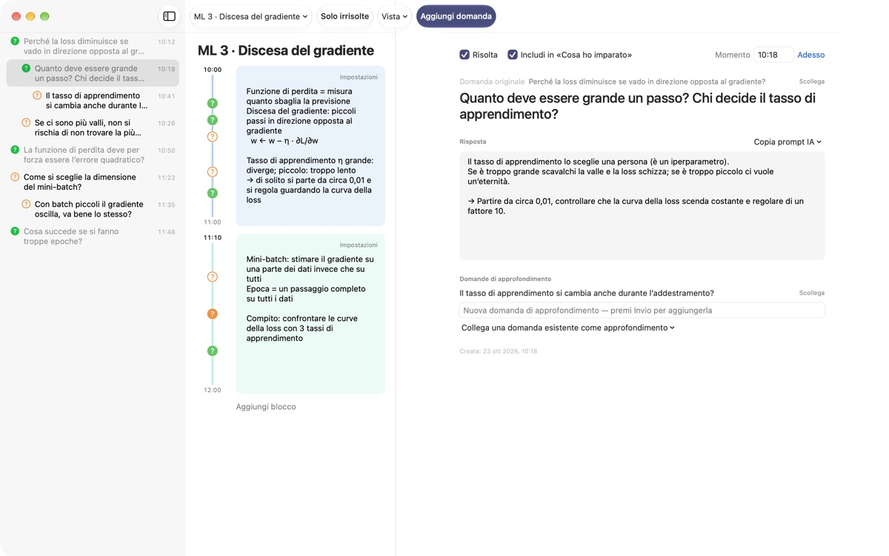
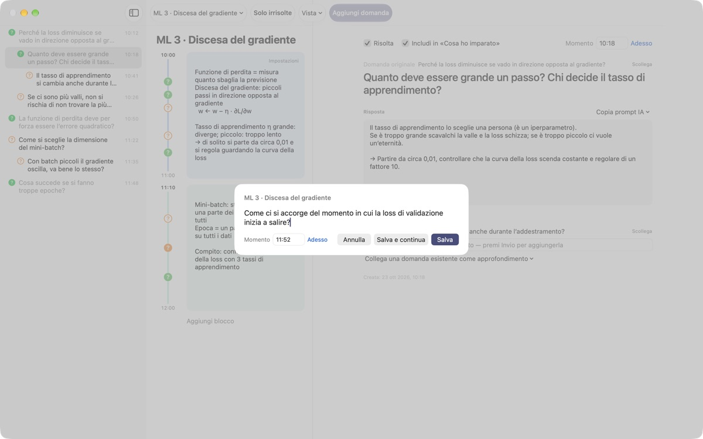
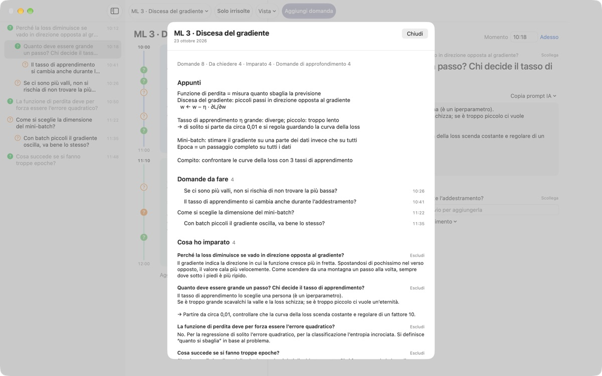
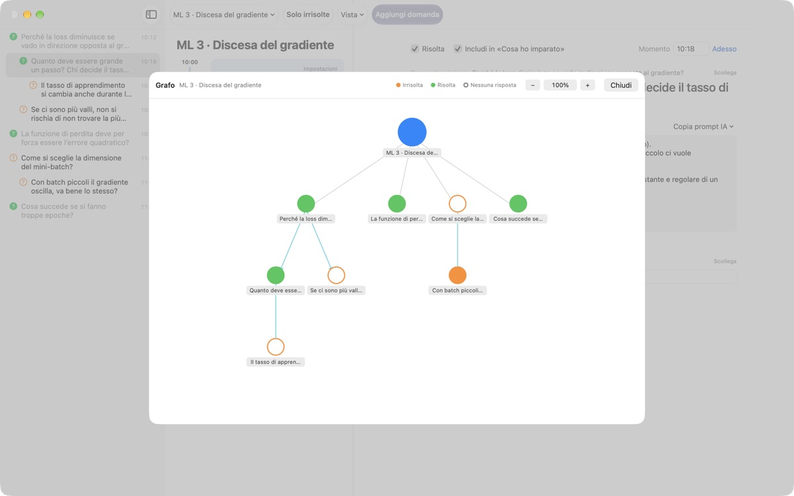

Nessun dubbio della lezione
andrà più perso
Premi ⌘⇧N, scrivi una riga e la domanda finisce accanto ai tuoi appunti di quel preciso minuto. Continui ad ascoltare e cerchi la risposta dopo.
Per macOS 14 o successivo. Nessun account, tutto resta su questo Mac.

Prova qui
Sei a metà di una lezione di machine learning. Scrivi una domanda e salvala: accanto al blocco di quell'ora compare un ?. Se scegli un orario fuori dai blocchi, si crea un blocco nuovo che la contiene.
Finita la lezione, ti ricordi ancora la domanda?
Appena pensi «un attimo, perché?», il docente è già passato oltre. Il punto interrogativo a margine non sa più da quale spiegazione è nato e resta senza risposta. LectureQ aggancia ogni domanda agli appunti di quel momento e te la tiene davanti finché non l'hai chiarita.
Chiedi senza perdere la frase successiva
Apri la finestra di inserimento con Aggiungi domanda nella barra strumenti o con ⌘⇧N. L'orario si compila da solo. Invio salva, ⌘Invio salva e ti prepara subito per la prossima.
Ogni domanda appare come un ? accanto al suo blocco orario: più tardi vedi subito da quale parte della lezione è nata.

Le domande risolte diventano ciò che hai imparato
Scrivi la risposta con parole tue, segna la domanda come risolta e finisce in Cosa ho imparato nel riepilogo. Quelle ancora aperte restano in Domande da fare, e la lista per la prossima lezione si compone da sola.Copia prompt IA, nei dettagli della domanda, mette negli appunti un prompt pronto con il titolo della lezione e i tuoi appunti di quel momento. Basta incollarlo nel servizio di IA che usi già.

Guarda dove ti ha portato il ragionamento
Le domande di approfondimento si impilano rientrate sotto la domanda da cui sono nate, e il grafo le collega con delle frecce. Clicca un nodo per andare dritto a quella domanda.
In Stato di apprendimento annoti dove sei ora, dove vuoi arrivare a fine corso e cosa vuoi imparare, e puoi confrontarli.

Per iniziare bastano tre passi
- 1
Crea una lezione
Dal menu delle lezioni a sinistra nella barra strumenti, oppure importa una conversazione salvata in Markdown.
- 2
Annota appena ti viene in mente
Premi
⌘⇧N. Basta una riga, l'orario c'è già. - 3
Rispondi dopo
Scrivi la risposta e clicca il ? per segnarla come risolta. Passa in Cosa ho imparato.
Scorciatoie da tastiera
- ⌘⇧N
- Aggiungi domanda
- Return
- Salva
- ⌘Return
- Salva e scrivi la prossima
- Esc
- Annulla
- ⌘1
- Riepilogo: domande da fare, cosa hai imparato, appunti
- ⌘2
- Grafo: domande originali e di approfondimento
- ⌘3
- Blocchi orari: tutti i blocchi delle lezioni in ordine di tempo
- ⌘4
- Stato di apprendimento
- ⌘+ · ⌘- · ⌘0
- Testo più grande, più piccolo, dimensione standard
Le trovi tutte anche nel menu Vista.
Tutte le funzioni sono gratis
Gratis
- Domande rapide e appunti per blocchi orari
- Domande di approfondimento e grafo
- Riepilogo, vista dei blocchi e Stato di apprendimento
- Prompt IA in cinque passi, copiati negli appunti
- Importazione di conversazioni in Markdown
Sostieni lo sviluppatore
- Se l'app ti è utile, lascia una piccola mancia da Impostazioni
- La mancia non sblocca niente in più
Con o senza mancia, tutto funziona allo stesso modo.
Niente pubblicità, niente account. I tuoi appunti restano su questo Mac.
Domande frequenti
Che cosa indicano i colori del ?
Nell'elenco, un cerchio arancione vuoto è una domanda ancora aperta, uno verde pieno una domanda risolta. Clicca il ? per passare dall'uno all'altro, e attiva Solo irrisolte nella barra strumenti per vedere solo quelle aperte. Accanto a un blocco orario il colore dice se è risolta, e il cerchio pieno che c'è già una risposta.
Come funzionano i blocchi orari?
Con Aggiungi blocco un nuovo blocco parte in quel momento e il precedente si chiude lì. Se annoti una domanda a un orario che nessun blocco copre, se ne crea uno intorno. Da Impostazioni, in alto a destra nel blocco, cambi colore, inizio e durata o lo elimini. Se elimini tu un blocco, quella lezione smette di crearne in automatico.
Che differenza c'è tra «Risolta» e «Cosa ho imparato»?
Quando spunti Risolta nei dettagli della domanda, scegli anche se conta in Cosa ho imparato. Lì compaiono solo le domande risolte che hai incluso. Puoi toglierle o rimetterle anche dal riepilogo; la risposta resta comunque.
Come funzionano i prompt IA?
Nei dettagli della domanda apri Copia prompt IA accanto a Risposta e scegli un passo: Affina la domanda, Trova la risposta, Metti in discussione la risposta, Ricava domande di approfondimento o Fai valutare la mia risposta. Negli appunti finisce un prompt con il titolo della lezione, gli appunti di quel momento, il tuo stato di apprendimento e la domanda originale. Per ora il testo del prompt è in coreano; la maggior parte dei servizi di IA lo capisce comunque e puoi chiedere la risposta in italiano. Per far valutare la tua risposta devi prima averla scritta. L'app non si collega mai da sola a un servizio di IA.
Posso importare una conversazione salvata in Markdown?
Scegli Importa da Markdown… nel menu delle lezioni. # Titolo diventa il nome della lezione e in ogni ## Sezione la prima domanda è quella originale, le successive sono di approfondimento. Le battute di chi parla per primo nel file diventano domande, quelle degli altri la risposta alla domanda precedente. Il file originale non viene toccato.
Come elimino una domanda o una lezione?
Fai clic destro sulla domanda nell'elenco e scegli Elimina. Per una lezione usa Elimina lezione corrente nel menu delle lezioni: insieme spariscono le sue domande e i suoi blocchi. Non si può annullare, quindi fai prima un backup di ciò che conta.
Dove sono salvati i miei dati e come faccio un backup?
Tutto resta su questo Mac e non viene caricato da nessuna parte. Per il backup chiudi l'app e copia l'intera cartella ~/Library/Containers/com.lectureq.LectureQ/Data/Library/Application Support/LectureQ/ con i file -wal e -shm. L'app invia solo statistiche d'uso anonime, come versione e giorni di apertura, mai ciò che scrivi.
Il testo è troppo piccolo.
⌘+ lo ingrandisce, ⌘- lo rimpicciolisce e ⌘0 torna alla dimensione standard. Si va dall'85% al 200% e l'impostazione viene ricordata.
Su quali Mac funziona?
Su qualsiasi Mac con macOS 14 o successivo. Il codice sorgente è pubblico su GitHub, in M1zz/LectureQ.
Qualcosa non funziona. A chi lo segnalo?
Invia un feedback dalle Impostazioni (⌘,) dell'app oppure scrivi all'indirizzo qui sotto. Indica la versione di macOS e cosa stavi facendo: così possiamo verificare prima.
Domande o suggerimenti? Scrivi a mizzking75@gmail.com.